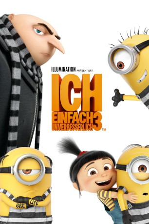

Alternativ: Despicable Me 3
 
 IMDB-Wertung: 6.3 / 10
IMDB-Wertung: 6.3 / 10  Metascore:
Metascore: 
Der einstmals finstere Gru hat sich im zweiten Teil in Agentin Lucy Wilde verguckt und aus Liebe zu ihr und seinen drei Adoptivtöchter Margo, Edith und Agnes die Seiten gewechselt: Gemeinsam mit seiner Angetrauten bekämpft er nun Bösewichte. Zu diesen gehört auch Balthazar Bratt, ein Super-Bösewicht und 80er-Jahre-Fan mit Schulterpolstern und Vokuhila, der hinter einem riesigen rosa Diamanten her ist. Während Gru mit der Jagd auf Bratt beschäftigt ist, bekommt er Besuch von seinem Zwillingsbruder Dru. Dieser hat nicht nur volles Haar, sondern ist auch noch erfolgreicher und selbstbewusster als Gru, der nicht mal seine Minions unter Kontrolle hat – und das nervt diesen gewaltig! Doch dann holt Balthazar Bratt zu einem teuflischen Schlag aus und die ungleichen Brüder müssen sich zusammenraufen, um die Welt zu retten.
Jahr: 2017
Dauer: 89 Minuten
FSK: 0
Land: USA Studio: Universal PicturesTonspuren: DTS - ,
Untertitel: Deutsch,
Auflösung: 1080p (1920x1080) Größe: 5601 MB
Genre: Action, Sci-Fi, Komödie, Abenteuer, Animation/Trick, Familie
Regisseur: Kyle Balda, Pierre Coffin, Eric Guillon
Drehbuch: Cinco Paul
Soundtrack:
Darsteller:
Datei: X:\Kinder Collections\Ich, einfach unverbesserlich\Ich - Einfach unverbesserlich 3 (2017, FSK0, 1920x1080) 3D.mkv seit 13.11.2017
Festplatte: Kinder-Filme+Trick
 Es gibt insgesamt 13 Filme in der Gruppe 'Kinder Collections\Ich, einfach unverbesserlich'
Es gibt insgesamt 13 Filme in der Gruppe 'Kinder Collections\Ich, einfach unverbesserlich'